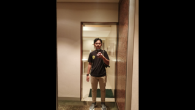

 Putra Habib Al Aziz begitulah nama yang orang tuaku berikan. Lahir disebuah desa yang bernama Rantau Karya pada tanggal 23 Desember 2003, saya tumbuh besar, menghabiskan hampir seluruh aktivitas kehidupan dan pendidikanku didesa tersebut. Pada saat ini, diusiaku yang hampir memasuki angka berkepala 2, saya sedang menempuh suatu Pendidikan disebuah instansi yang bernama POLITEKNIK MANUFAKTUR NEGERI BANGKA BELITUNG dengan Jurusan Teknik Mesin Prodi D4 Teknik Mesin dan Manufaktur.
Menceritakan sedikit bagaima saya dapat mengikuti Progam MSIB sebagai salah satu peserta di NF Computer. Berawal dari kebijakan kampus yang mulai dari tahun 2021 menerapkan kurikuluk MBKM ( Merdeka Belajar Kampus Merdeka) yang wajib diikuti oleh mahasiswa aktif semester 5, informasi tersebut mulai saya dapatkan ketika saya sudah memasuki semester 2 dan mulai saat itu saya mencoba untuk mengambil ancang-ancang dan memikirkan apa yang akan saya lakukan pada semester 5 tersebut, muncul pertama kali dipikiran saya yaitu, saya ingin mengikuti program MSIB dari pemerintah pusat tetapi pada bagian Magang bersertifikat bukan untuk Studi Independen Bersertifikat, namun lambat laun seiring dengan berjalannya waktu dan juga karena alasan personal yang mengaitkan dengan kondisi Kesehatan kedua orang tua saya, akhirnya saya mengurungkan niat saya untuk mengikuti program Magang tersebut, lalu saya mencoba untuk searching-searching mengenai apa itu Studi Independen. Dan akhirnya saya mengmbil keputusan untuk mengikuti Studi Independen saja dan alhamdulillahnya saya lolos dan diterima oleh sebuah mitra yang menamakan diri mereka yaitu, PT NURUL FIKRI CIPTA INOVASI.